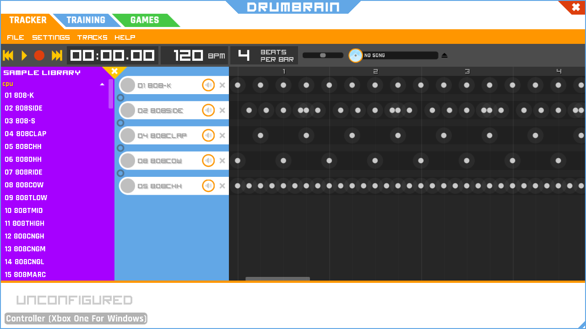

everydays 20
Played around with an 808 emulator that you can find at https://io808.com/.
tags: bleep-bloops, everydays
everydays 18
In the itch.io racial justice bundle I came across an app named Drum Brain. It allows you to use a Rockband drum set to create drum loops. It is pretty cool on it's own, but then I realized you can load in your own samples, and since I am a terrible drummer I also was very happy to see a quantize function in there.
So I loaded up a bunch of 808 samples and made a nice little loop. Really fun to play around with, basically using a e-drum set instead of a sequencer. Here is the sequence and the output.

tags: everydays, bleep-bloops, drum-brain
everydays 17
Livestreamed a tidal cycles improv session, was not really feeling it and it was sort of going nowhere and then it just came together all of the sudden. Ended up liking the outcome quite a bit, and it sort of surprised me.
tags: everydays, bleep-bloops, tidal-cycles
everydays 16
Playing around with tidal cycles, the main beat was stolen content, but worked some other stuff in that I enjoyed
tags: everydays, bleep-bloops, tidal-cycles
colorful clarity
Started to play around with Hydra, ended up in a jam session
You can play around with the Hydra code here
edit: oh yeah this was my everyday, streak 11
tags: everydays, bleep-bloops, live-coding, tidal-cycles, hydra
bop it
A little jam session in tidal cycles using bop it samples
tags: bleep-bloops, tidal-cycles, live-coding
algorhythms
"Live coding" in the general sense is creating art using code, usually on the fly in an improvisational way.
I have been playing around with music production using a patterning language Tidal Cycles, where you can create patterns and sequences of samples and synths among other things.
Here are a few of my explorations using it
tags: bleep-bloops, tidal-cycles, live-coding